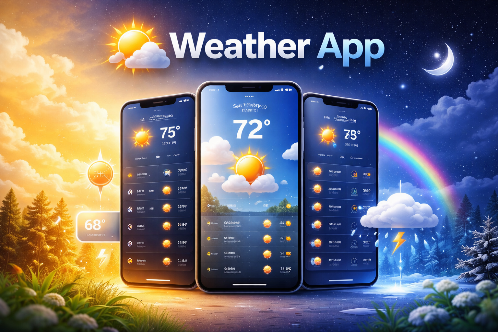
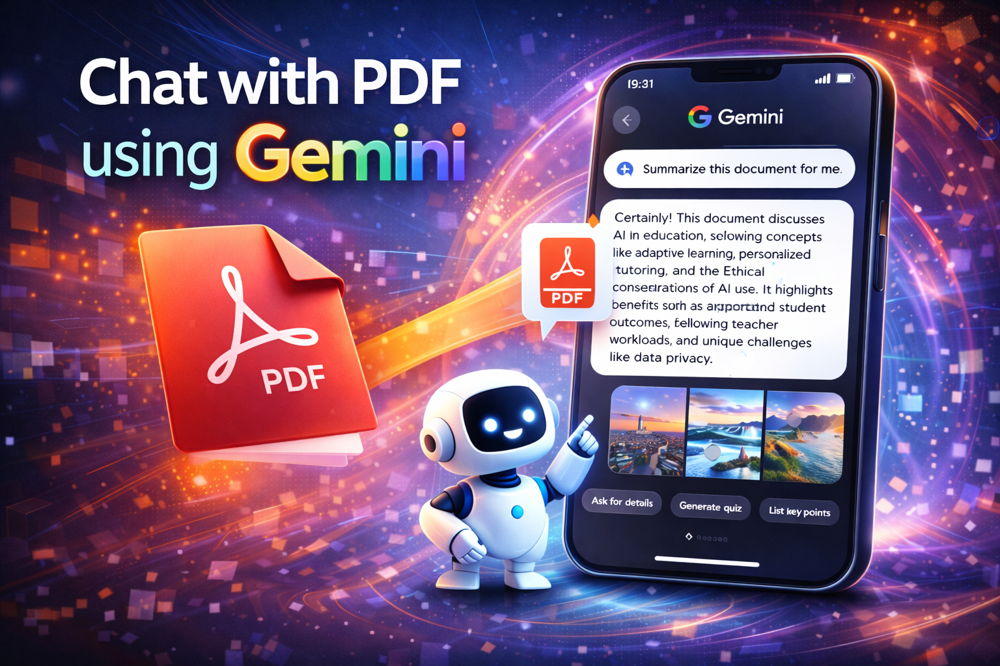

I'm Software Quality Engineer.
Hello! I'm Rutuja Shaha, Lead Software Quality Engineer with 8.5+ years of experience developing robust automation frameworks and owning end-to-end quality for large-scale, user-facing products. Driving release readiness and ensuring reliable product delivery at scale.
About me
I am a Quality Engineer passionate about building high-quality, reliable software and scalable automation frameworks. With several years of experience owning end-to-end quality for complex products, I enjoy uncovering edge cases, improving test coverage, and enabling smooth releases. Alongside my core expertise in automation, I am actively exploring web development and GenAI through hands-on projects, driven by curiosity and a desire to expand my technical depth. I believe strong quality comes from understanding the system end-to-end and continuously learning new technologies. I enjoy solving problems, improving systems, and continuously evolving my skill set.
Skills
-

Languages
Skilled in diverse programming languages such as Java, HTML/CSS, Javascript.
Familiar with - Python, PowerShell. -

Automation and Testing:
Proficient in integration testing and developing automation frameworks using tools such as Selenium, WebDriverIO, TestNG, Mocha.
-
API Testing:
Proficient in REST and SOAP API testing using tools such as Postman and SoapUI.
-
Tools
Experience with essential tools such as Git, Jenkins, Bamboo, Jira, WinSCP.
-

Databases
Experience with relational and NoSQL databases for efficient data management such as SQL, MongoDB.
-
Web Development
Working knowledge of web development, including HTML, CSS, JavaScript, React, Next.js, and backend development using Node.js and Express, gained through hands-on projects.
-
GenAI & AI-assisted Development
Practical exposure to GenAI through project-based learning using Google Gemini APIs, LangChain, Streamlit, Prompt engineering
Education
A brief overview of my academic qualifications.
-
Cummins College of Engineering for Women, Pune
July 2013 – May 2017
Bachelor of Engineering (Computer Engineering)
Percentage: 72.61% -
Tuljaram Chaturchand College, Baramati
2012 – 2013
12th HSC Board
Percentage: 83% -
M.E.S. High school, Baramati
2010 – 2011
10th SSC Board;
Percentage: 99.82%
Certifications
-
Udemy - 100 Days of Code: The Complete Python Pro Bootcamp
Certificate link
Experience
These hands-on experiences have significantly enhanced my technical proficiency and problem-solving capabilities in real-world settings.
Lead Software Quality Engineer
October 2022 – Present
- Owned end-to-end quality and delivery of the Edit Image feature (powered by Adobe Express) within the Acrobat Chrome Extension.
- Led rollout across high-traffic surfaces including browser native context menus, WhatsApp Web, Gmail, Google Images, Google Drive, Outlook, and ChatGPT, scaling adoption to 4M MAU within one year.
- Developed a Node.js–based image testing utility to serve images over HTTP with configurable content types, enabling validation across multiple image formats.
- Independently designed and implemented automation across all supported surfaces, enabling daily runs that caught ~90% of historically observed client-platform breakages and significantly reduced production impact.
- Served as QE Coordinator for Acrobat Extension build releases, leading release validation, cross-team sign-offs, and on-time production publishing.
- Built a scalable test harness and QA certification framework for the Embed SDK, increasing automation coverage to 96% and reducing release certification time from 3 days to under 1 day.
- Led development of Google Drive and Box automation frameworks using JavaScript, WebDriverIO, and Mocha, leveraging shared Embed SDK components to automate key integration workflows and streamline the release process.
- Managed testing for Adobe Acrobat integrations with Google Drive and Box, overseeing ModernViewer features and ensuring smooth, reliable releases.
- Mentored team members on test processes and SDK standards to maintain consistent product quality.
Quality Specialist
June 2017 – October 2022
- Contributed to the development and enhancement of a Java-based Selenium and TestNG automation framework, implemented parallel execution and Bamboo CI/CD integration, reducing manual regression time by 85%.
- Maintained and enhanced a PowerShell automation framework for critical integration connector testing and developed configuration scripts to automate environment setup, eliminating redundant manual effort.
- Designed and executed end-to-end testing strategies for Web UI and Backend (REST/SOAP), utilizing Postman and SoapUI to ensure API integrity.
- Partnered with stakeholders to embed quality early, develop comprehensive test plans and build reusable automation, resulting in a 15% improvement in team productivity.
- Identified design and functionality issues in XML-formatted integration connectors, enhancing functional performance and achieving a 90%+ defect removal efficiency rate.
Latest Projects
Check out some of my latest projects.
-
Web Development
VisionPlay Video Player
Developed VisionPlay, a custom video player using HTML, CSS and JavaScript, offering intuitive controls for an engaging playback experience.
See Project
Integrated video upload functionality via drag-and-drop and file input, with error handling for unsupported formats.
Enhanced playback interactivity with features such as speed adjustment, volume control, slider seeking and forward/backward navigation. -
Web Development
Weather App
Developed a responsive Weather Application using HTML, CSS, and JavaScript, integrating a third-party API for real-time weather data.
See Project
Enabled users to retrieve current weather conditions based on location input.
-
Web Development
Chat with PDF using Gemini
Developed a Streamlit web app to upload multiple PDFs, extract text and interactively query content using Google Generative AI (Gemini Flash).
See Project
Integrated LangChain for text chunking and prompt management to ensure accurate and relevant responses.
Leveraged FAISS for efficient vector similarity searches, enhancing relevant information retrieval.
Developed a prompt-based QA chain using natural language queries and Google Generative AI embeddings to deliver accurate, context-aware answers.
-
Web Development
FlashSummary: YouTube AI Assistant
A GenAI-powered Chrome Extension for generating quick AI summaries of YouTube videos.
See Project
Developed a Chrome Extension leveraging Google Gemini Flash to summarize YouTube videos using transcripts.
Built a Python Flask backend to fetch transcripts via the YouTube Transcript API and generate summaries.
Ensured compatibility with various YouTube URL formats, including shorts, embeds, and standard videos.
Get in Touch
rutujashaha786@gmail.com
Contact
+91-8446904487